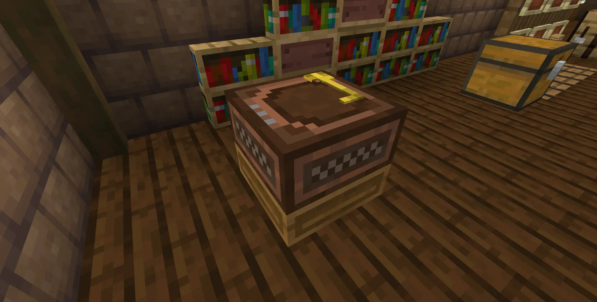
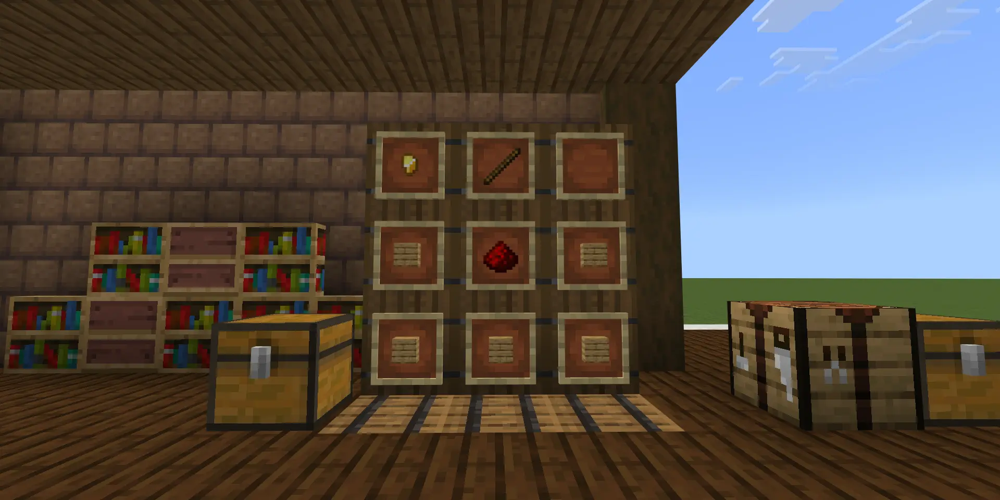
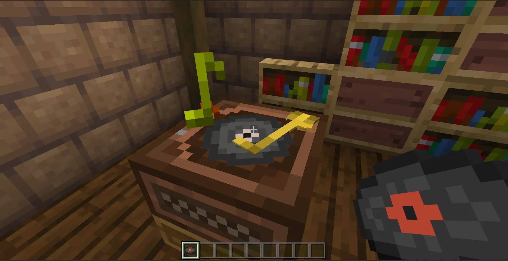
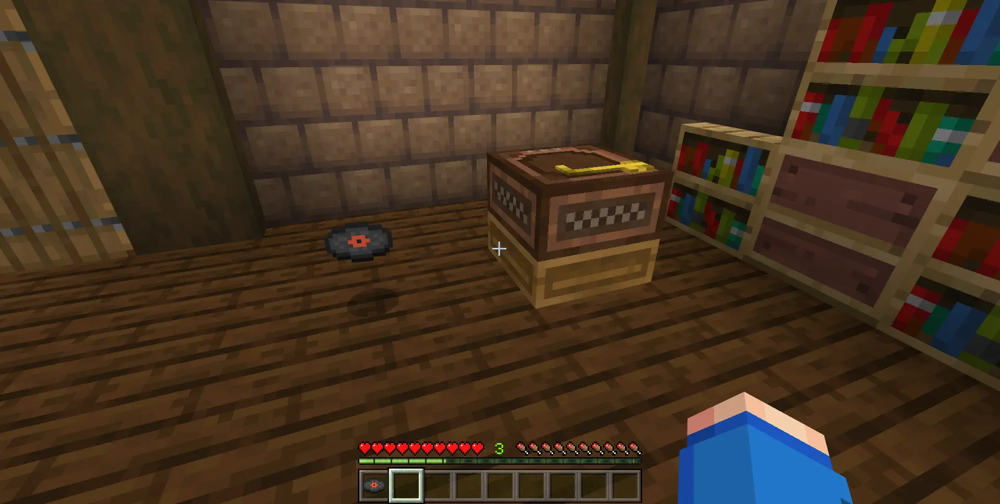
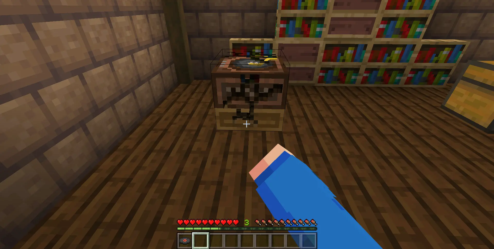
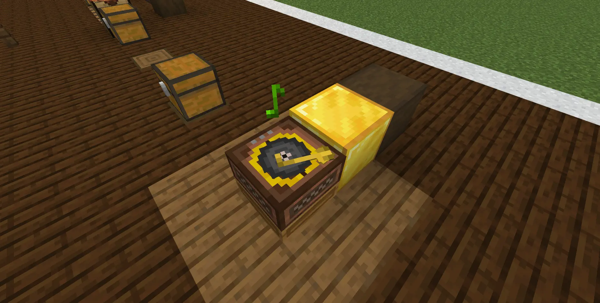
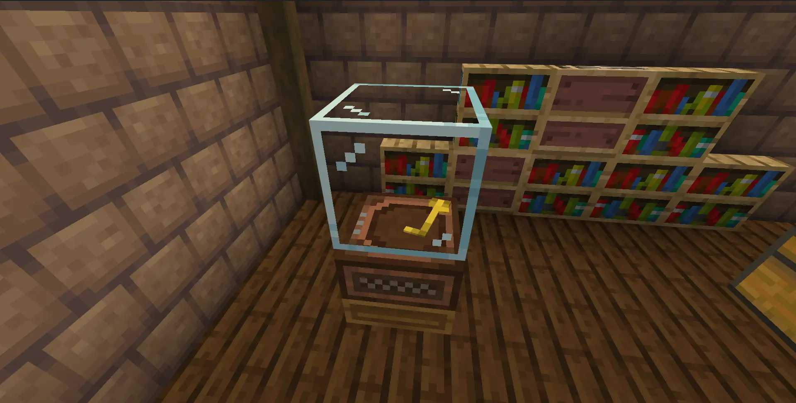
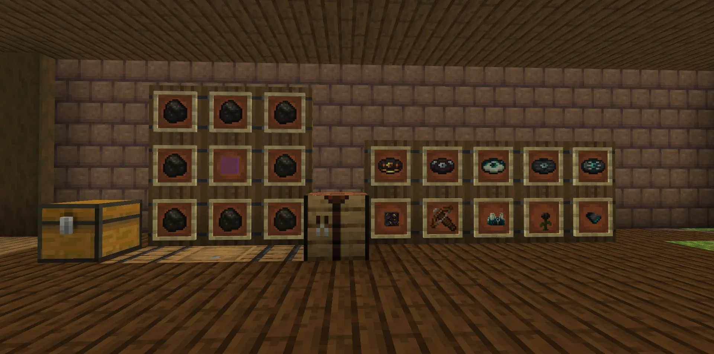
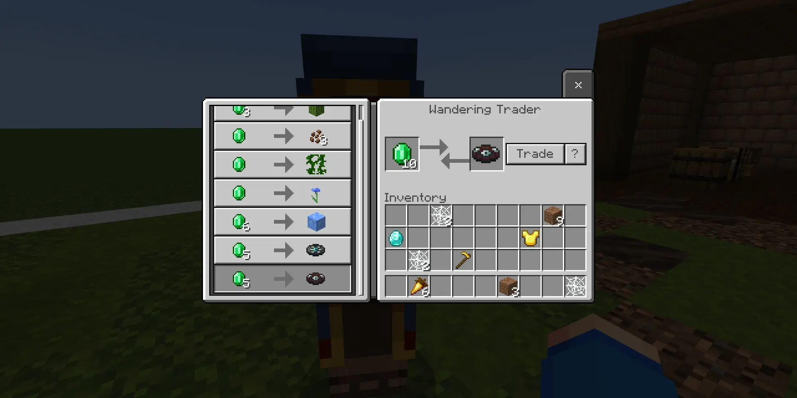
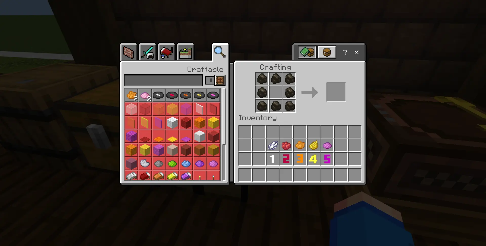

The "Music Extension" expands and improves the music system for Minecraft Bedrock. It adds a custom Music box with cool animations and five new music discs from T-en-M. Not only that, you can also add your own custom sound to the pack with a simple tool too! Now you can enjoy awesome tunes while playing Minecraft and make your adventures even more fun!
Let's see what this addon has to offer, shall we?

This is the Music Box! A brand new block that allows you to play music disc!
But we have Juke Box for that right? Don't worry, you will see why the Music Box is better (and cheap to craft too...)

But we have Juke Box for that right? Don't worry, you will see why the Music Box is better (and cheap to craft too...)
Let's start off with its recipe! Just with 5 planks, 1 redstone, a stick and a gold nugget then voila... The music Box

To use the Music Box, while holding the music disc, right-click onto the TOP side of the Box! The Musix Box will work with all kind of disc so don't worry!

To get back the disc, right-click on any side of the Music Box and you will reset it to original state! (AKA spit out the disc)

You can only break the block from any side except from the top! (You don't want to break the fragile golden stylus, do you?)

For song that you want to listen on repeat, simply put a gold block on the side where the Stylus is facing! You should see a golden ring indicator pops up! From now on, your song will get played on loop!

One cool feature for redstone engineer: If there's any non-air block on top of the Music Box, the Box will reset itself on loop! So if you want to stop the music automatically, just place some piston and set it up!

Well, this addon also add some cool music from T-en-M! Yay! You need to craft these disc using 8 charcoals, I repeat charcoal...not coal, and at the middle, simply place the special items for each special disc!

The Wandering Trader also will offer special disc for just 5 emeralds each!
(It such a steal, isn't it?)

(It such a steal, isn't it?)
[IMPORTANT]: You can also add your own custom sound too! Using the experimental tool below!
- The recipe will use Charcoal and dye! As you can see in the picture, each dye color is numerical assigned! What does it mean? It mean if you upload just 1 sound file, that sound will be assigned to the white disc, so on and so on. If you upload multiple sound files, their order will determine which disc will have what sound!
- Please note that even if you only add 1 sound file or didn't upload anything, the empty discs will still be included, but they won't play anything!
- The recipe will use Charcoal and dye! As you can see in the picture, each dye color is numerical assigned! What does it mean? It mean if you upload just 1 sound file, that sound will be assigned to the white disc, so on and so on. If you upload multiple sound files, their order will determine which disc will have what sound!
- Please note that even if you only add 1 sound file or didn't upload anything, the empty discs will still be included, but they won't play anything!